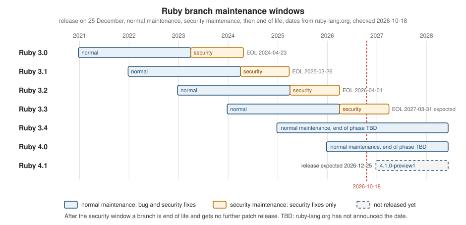

Versions, Releases and Compatibility
|
This content was generated with the assistance of AI and should be verified against the official documentation before being relied on in production. |
This page is written against Ruby 4.0 (4.0.7, released 2026-09-15) and was checked on 2026-10-18. Ruby 4.1 is not released
yet: 4.1.0-preview1 appeared on 2026-10-12 and the final release is expected on 2026-12-25, so everything here about 4.1 is
marked as preview and may change. Features newer than 3.0 name the version that introduced them. The page answers four
questions: which Ruby versions exist and for how long they are fixed, what a version number promises, how a program or a
project says which Ruby it needs, and how to find out what an upgrade will break. The previous page is
Getting Started; the language-by-language list of changes continues on
What’s New and Migrating Older Code.
Every output below was produced with Ruby 4.0.7 on arm64-darwin23 (macOS on Apple silicon), installed with mise. Values that
depend on the machine, such as RUBY_PLATFORM, will differ on yours.
The release cycle
Ruby has one fixed release date: a new minor (or major) version is published every 25 December, and the Ruby core team publishes patch releases for the supported branches during the year. The pattern is visible in the release list on ruby-lang.org:
| Branch | First release | Status on 2026-10-18 |
|---|---|---|
3.0 |
2020-12-25 |
end of life (2024-04-23) |
3.1 |
2021-12-25 |
end of life (2025-03-26) |
3.2 |
2022-12-25 |
end of life (2026-04-01) |
3.3 |
2023-12-25 |
security maintenance (latest patch 3.3.12, 2026-07-16) |
3.4 |
2024-12-25 |
normal maintenance (latest patch 3.4.11, 2026-09-23) |
4.0 |
2025-12-25 |
normal maintenance (latest patch 4.0.7, 2026-09-15) |
4.1 |
expected 2026-12-25 |
preview ( |
A release goes through previews (4.1.0-preview1, -preview2, …) and a release candidate (-rc1) before the .0
release. Those names sort before the final version, which matters when a program compares versions (see
Comparing versions). The 4.0 branch is a good picture of the patch cadence: 4.0.0 on 2025-12-25, then
4.0.1 (2026-01-13), 4.0.2 (2026-03-16), 4.0.3 (2026-04-21), 4.0.4 (2026-05-11), 4.0.5 (2026-05-20), 4.0.6
(2026-07-14) and 4.0.7 (2026-09-15): seven patch releases in nine months. Patch releases carry bug fixes and security fixes
only; new features arrive with the next December release.
What a version number means
A Ruby version is MAJOR.MINOR.TEENY, for example 4.0.7: major 4, minor 0, teeny (the patch release) 7. Three points
about it are easy to get wrong.
-
Minor releases may remove things. Ruby does not promise that code keeps working across minor versions the way a strict semantic-versioning scheme would. Each release’s NEWS file has a "Compatibility issues" section, and the removals are usually things that had been deprecated for several releases:
Fixnum,BignumandFile.exists?went in 3.2,Kernel#openwith a leading|in 4.0. See What each release changed. -
The patch number is
RUBY_VERSION, notRUBY_PATCHLEVEL. Since Ruby 2.1 the patchlevel is fully determined by the major, minor and teeny numbers, so the separateRUBY_PATCHLEVELconstant carries no extra information: it is0on 4.0.7, and the Ruby module documents-1for a development build. -
The library directory is versioned by ABI, not by patch. Gems and the standard library of every
4.0.xlive under a directory named4.0.0, which is whatRbConfig::CONFIG["ruby_version"]returns. A gem with a C extension built for 4.0.7 therefore works on 4.0.3, and a4.1build needs it rebuilt. See C Extensions, FFI and WebAssembly.
What "4.0" means
Ruby 4.0 is the release after 3.4. The 3.5 name was used for the development series: the releases list shows 3.5.0-preview1
(2025-04-18), then 4.0.0-preview2, so the series shipped as 4.0. The number change did not come with a flag-day break. The
4.0.0 announcement lists two headline features, both labelled experimental, plus a set of smaller improvements:
-
Ruby::Box (experimental, off unless
RUBY_BOX=1is set), which isolates definitions such as monkey patches and global variables in separate boxes. It is described on Code Loading: require and autoload; this page only notes thatRuby::Boxexists. -
ZJIT (experimental), a new method-based JIT compiler built with Rust 1.85 or newer and enabled with
--zjit. In 4.0 it is faster than the interpreter but not as fast as YJIT, and the announcement advises against production use. See YJIT, ZJIT and the VM. -
Ractor::Port and the other Ractor API changes,
SetandPathnameas core classes, theRubymodule,*nilno longer callingnil.to_a, and a leading&&or||on a new line continuing the previous line. See Ractors, Sets and Program Structure and Lexical Elements.
The timeline shows the headline changes of each release since 3.0. The 4.1 entry comes from the preview announcement and can still change before the final release.
Source: NEWS for Ruby 4.0.0, NEWS for Ruby 3.4.0 and Ruby 4.0.0 Released
Branch maintenance phases
Every release branch goes through the same three phases, and ruby-lang.org keeps the current state of each branch on one page:
-
Normal maintenance (bug fix): the branch receives general bug fixes and security fixes.
-
Security maintenance (security fix): only security fixes are backported.
-
End of life (EOL): the ruby-core team no longer supports the branch and no further patch release is made.
The page publishes the dates of each phase. The dates below are the ones listed on 2026-10-18; 3.4 and 4.0 are in normal maintenance with their end still TBD (not announced), and the EOL date of 3.3 is marked expected:
| Branch | Release | Normal maintenance until | End of life |
|---|---|---|---|
3.0 |
2020-12-25 |
2023-04-01 |
2024-04-23 |
3.1 |
2021-12-25 |
2024-04-01 |
2025-03-26 |
3.2 |
2022-12-25 |
2025-04-01 |
2026-04-01 |
3.3 |
2023-12-25 |
2026-04-01 |
2027-03-31 (expected) |
3.4 |
2024-12-25 |
TBD |
TBD |
4.0 |
2025-12-25 |
TBD |
TBD |

The shape of the closed branches is regular: normal maintenance ends on 1 April, about two years and three months after the release, and end of life follows about a year later, around the end of March. That is an observation about 3.0 to 3.3, not a promise, and the page does not announce the dates for 3.4 and 4.0 yet. Practical consequences:
-
Run production on a branch in normal maintenance (today 4.0 or 3.4). In security maintenance (3.3) only security fixes are produced, and an EOL branch (3.2 and older) gets nothing, not even for a vulnerability. The Security page covers following the security announcements.
-
A library should declare the oldest Ruby it supports (see required_ruby_version) and test on every branch it claims to support.
-
A bug report should say which released version is affected and whether the problem also reproduces on the development branch (
master). The reporting guide lists the three maintenance states in the same words as above.
Source: ruby-lang.org: Ruby Branches and Reporting Issues
The version constants and the Ruby module
A running program can ask the interpreter what it is. The constants have existed for a very long time; Ruby 4.0 additionally
defines a top-level module named Ruby (the name was reserved in 3.4, where defining it warned under
Warning[:deprecated]) that holds the same values without the RUBY_ prefix, because they describe the language
implementation rather than the object system.
# frozen_string_literal: true
# Everything the running interpreter reports about itself.
puts "RUBY_VERSION #{RUBY_VERSION}"
puts "RUBY_PATCHLEVEL #{RUBY_PATCHLEVEL}"
puts "RUBY_RELEASE_DATE #{RUBY_RELEASE_DATE}"
puts "RUBY_ENGINE #{RUBY_ENGINE}"
puts "RUBY_ENGINE_VERSION #{RUBY_ENGINE_VERSION}"
puts "RUBY_PLATFORM #{RUBY_PLATFORM}"
puts "RUBY_DESCRIPTION #{RUBY_DESCRIPTION}"
puts "RUBY_COPYRIGHT #{RUBY_COPYRIGHT}"
# Since 4.0 the same values live in the Ruby module, without the prefix.
puts Ruby::VERSION == RUBY_VERSION
puts Ruby::ENGINE == RUBY_ENGINE
puts Ruby.constants.sort.inspectOutput:
RUBY_VERSION 4.0.7
RUBY_PATCHLEVEL 0
RUBY_RELEASE_DATE 2026-09-15
RUBY_ENGINE ruby
RUBY_ENGINE_VERSION 4.0.7
RUBY_PLATFORM arm64-darwin23
RUBY_DESCRIPTION ruby 4.0.7 (2026-09-15 revision 229531a6cf) +PRISM [arm64-darwin23]
RUBY_COPYRIGHT ruby - Copyright (C) 1993-2026 Yukihiro Matsumoto
true
true
[:Box, :COPYRIGHT, :DESCRIPTION, :ENGINE, :ENGINE_VERSION, :PATCHLEVEL, :PLATFORM, :RELEASE_DATE, :REVISION, :VERSION]Source: module Ruby
Ruby.constants also lists Box: that is the experimental Ruby::Box mentioned above, not a version constant.
The constants, with the Ruby:: name next to each:
| Constant | Ruby module name | Meaning |
|---|---|---|
|
|
the language version as a string, |
|
|
|
|
|
the date of this release, |
|
|
the implementation: |
|
|
the implementation’s own version; equal to |
|
|
the platform the interpreter was built for, |
|
|
the commit the interpreter was built from |
|
|
the full line printed by |
|
|
the copyright line printed by |
The same information is available without writing a program. ruby --version prints RUBY_DESCRIPTION, whose +PRISM
suffix says that the Prism parser is compiled in (the default parser since 3.4). The short option -v also prints it, but it
additionally switches on verbose mode ($VERBOSE becomes true) and then runs the script, so -v with a script is a
different command from --version:
$ ruby --version
ruby 4.0.7 (2026-09-15 revision 229531a6cf) +PRISM [arm64-darwin23]
$ ruby -e 'puts RUBY_VERSION'
4.0.7
$ ruby -v -e '1'
ruby 4.0.7 (2026-09-15 revision 229531a6cf) +PRISM [arm64-darwin23]
-e:1: warning: possibly useless use of a literal in void contextSource: module Ruby, Ruby command-line options and NEWS for Ruby 4.0.0
Comparing versions
Version strings are not numbers and should not be compared as text. As strings, "3.10.0" sorts before "3.4.0" because the
character 1 comes before 4; RubyGems ships a class that compares the dotted segments as integers. Gem::Version is
available in every Ruby without a require (RubyGems is loaded at start-up), Gem.ruby_version returns the running version
as one, and Gem::Requirement expresses a constraint such as the ones in a gemspec.
# frozen_string_literal: true
# Compare versions as versions, never as strings.
puts "3.10.0" >= "3.4.0"
puts Gem::Version.new("3.10.0") >= Gem::Version.new("3.4.0")
running = Gem.ruby_version
p running
p running.segments
p running.release
p running.prerelease?
preview = Gem::Version.new("4.1.0-preview1")
p preview
p preview.prerelease?
p preview < Gem::Version.new("4.1.0")
p preview > running
# A requirement is a set of comparison operators, as in a gemspec.
p Gem::Requirement.new("~> 4.0").satisfied_by?(running)
p Gem::Requirement.new(">= 3.3", "< 4.0").satisfied_by?(running)
# The library directory is versioned by ABI ("4.0.0"), not by patch release.
p RbConfig::CONFIG.values_at("MAJOR", "MINOR", "TEENY", "ruby_version")Output:
false
true
#<Gem::Version "4.0.7">
[4, 0, 7]
#<Gem::Version "4.0.7">
false
#<Gem::Version "4.1.0.pre.preview1">
true
true
true
true
false
["4", "0", "7", "4.0.0"]Points to notice in the output:
-
The string comparison answers
falseand theGem::Versioncomparisontruefor the same two values. -
Gem::Version.new("4.1.0-preview1")is normalised to4.1.0.pre.preview1: any segment containing a letter makes the version a prerelease, which sorts before4.1.0but after4.0.7. A requirement such as>= 4.1is therefore not satisfied by that preview version string, although the preview is newer than every 4.0.x. -
~> 4.0is the "pessimistic" operator: at least4.0and below5.">= 3.3", "< 4.0"passes two requirements that must both hold, so it rejects 4.0.7. -
RbConfig::CONFIGholds the build-time facts.MAJOR,MINORandTEENYare the three parts of the version andruby_versionis the ABI directory name discussed above.
Source: Gem::Version, Gem::Requirement, Gem.ruby_version and RbConfig
The shelf gem uses this to fail early on a Ruby it was not tested on. The gemspec already refuses to install on an older Ruby
(see below), so the guard matters for the cases that skip the gemspec: a checkout used directly, a vendored copy, or a script
that loads the library with require_relative.
# frozen_string_literal: true
module Shelf
class UnsupportedRubyError < StandardError; end
# Fails early, with a readable message, on a Ruby the gem was not tested on.
module RubySupport
MINIMUM = Gem::Version.new("4.0")
def self.check!(running = Gem.ruby_version)
return running if running >= MINIMUM
raise UnsupportedRubyError, "shelf needs Ruby #{MINIMUM} or newer, found #{running}"
end
end
end
p Shelf::RubySupport.check!
begin
Shelf::RubySupport.check!(Gem::Version.new("3.3.12"))
rescue Shelf::UnsupportedRubyError => e
puts "#{e.class}: #{e.message}"
endOutput:
#<Gem::Version "4.0.7">
Shelf::UnsupportedRubyError: shelf needs Ruby 4.0 or newer, found 3.3.12The method takes the version as a default argument so that a test can pass a different one, as the last lines do, instead of
trying to change RUBY_VERSION (a constant, and reassigning it prints a warning and breaks everything that reads it).
Source: Gem::Version and Comparable
Feature detection beats version checks
A version check says what the interpreter is called; a feature check says what it can do. Feature checks keep working on other
implementations, on development builds and on a release that backports a method, and they read better: the test names the
capability instead of the number it appeared in. Use respond_to? for a method on an object, method_defined? for an
instance method of a class, and defined? for a constant or other construct.
# frozen_string_literal: true
# Ask the interpreter what it can do instead of what it is called.
checks = {
"Set (autoloaded in 3.2, core in 4.0)" => defined?(Set) ? true : false,
"Array#rfind (4.0)" => Array.method_defined?(:rfind),
"Class#subclasses (3.1)" => Class.method_defined?(:subclasses),
"Data (3.2)" => defined?(Data) ? true : false,
"Ruby module (4.0)" => defined?(Ruby::VERSION) ? true : false,
"Ractor::Port (4.0)" => defined?(Ractor::Port) ? true : false,
"Ractor.yield (removed in 4.0)" => Ractor.respond_to?(:yield),
"Pathname (core in 4.0)" => defined?(Pathname) ? true : false
}
checks.each { |name, present| puts "#{present.to_s.ljust(5)} #{name}" }Output:
true Set (autoloaded in 3.2, core in 4.0)
true Array#rfind (4.0)
true Class#subclasses (3.1)
true Data (3.2)
true Ruby module (4.0)
true Ractor::Port (4.0)
false Ractor.yield (removed in 4.0)
true Pathname (core in 4.0)Three things the table shows. Set and Pathname are present without a require in 4.0 because they are core classes now;
on 3.2 and later Set was autoloaded and on older versions it needed require "set", so a library that still runs on 3.x
keeps the require (it is harmless). Ractor.yield is gone in 4.0, so respond_to? is the right probe for the old
Ractor API. And Ractor::Port is a constant, so defined? is the right probe for the new one.
When a version check is the only option, such as a behaviour change with no new method, compare with Gem::Version, never
with strings, and compare RUBY_VERSION (the language) rather than RUBY_ENGINE_VERSION, because an alternative implementation reports
the language version it implements in RUBY_VERSION and its own release number in RUBY_ENGINE_VERSION.
Declaring the Ruby version of a project
A project records the Ruby it needs in up to three places, and each has a different reader.
| File or setting | Read by | Purpose |
|---|---|---|
|
version managers and Bundler |
one line, |
the |
Bundler |
refuses to run (and to resolve) on a Ruby that does not match |
|
RubyGems and Bundler |
a published gem’s minimum (and maximum) supported Ruby |
.ruby-version and the version managers
.ruby-version is a plain text file with a version number on one line, a convention that version managers such as rbenv,
chruby and RVM read, and that Bundler can read through the Gemfile (below). Version managers are community tools that
ruby-lang.org only lists; the installation options are on
Getting Started. One difference is worth knowing because it surprises
people: mise reads .ruby-version only when idiomatic version files are enabled for Ruby
(mise settings add idiomatic_version_file_enable_tools ruby); the setting is off by default, so in a directory with
.ruby-version set to 4.0.7 a plain mise current can still report the system Ruby. Its own file, mise.toml, always
works.
The ruby line of the Gemfile
Bundler’s ruby method states the Ruby a project needs. It accepts a literal version, several requirements that must all
hold, a version file, and an engine for projects that run on another implementation. The three Gemfiles below are alternatives:
each is a complete file of its own.
# frozen_string_literal: true
source "https://rubygems.org"
# Read the version from the file the version manager already uses.
ruby file: ".ruby-version"
gemspec# frozen_string_literal: true
source "https://rubygems.org"
# Several requirements are ANDed, exactly as in a gemspec.
ruby ">= 4.0", "< 5"# frozen_string_literal: true
source "https://rubygems.org"
# Pin an alternative implementation: the language version, then the engine's own.
ruby "4.0.0", engine: "jruby", engine_version: "10.1.2.0"Source: Gemfile reference: ruby
The first form reads .ruby-version (and, in the Bundler documentation, .tool-versions) so that the Gemfile and the version
manager can never disagree. The third pins JRuby: the first argument is the language version, engine_version the
implementation’s own; the numbers shown are an illustration (it was not run here, as JRuby is not installed), and a real
Gemfile uses the two values that the engine prints for RUBY_VERSION and RUBY_ENGINE_VERSION. On CRuby the engine version must equal the Ruby version, and a patch level in the ruby line has been
meaningless since Ruby 2.1.
When the running Ruby does not match, Bundler stops before running anything. With .ruby-version changed to 3.3.12,
a command run through bundle exec fails like this (the path prefix is shortened):
.../bundler/definition.rb:520:in 'Bundler::Definition#validate_ruby!': Your Ruby version is 4.0.7, but your Gemfile specified 3.3.12 (Bundler::RubyVersionMismatch)With the file set to 4.0.7 the same command runs, and bundle install records the version in Gemfile.lock under a
RUBY VERSION heading next to BUNDLED WITH 4.0.20, so the lock file also tells a reader which Ruby it was resolved with.
Ruby 4.0 ships RubyGems and Bundler 4.0.x (the 4.0 series share one version number); the latest Bundler supports every Ruby
that has not reached end of life, and Bundler 4.0 itself requires Ruby 3.2 or newer. See
RubyGems and Bundler.
required_ruby_version in a gemspec
A gem declares the Rubies it supports with required_ruby_version, as the shelf gemspec does:
# frozen_string_literal: true
Gem::Specification.new do |spec|
spec.name = "shelf"
spec.version = "0.1.0"
spec.authors = ["Example Author"]
spec.summary = "A small library catalogue."
spec.license = "MIT"
spec.required_ruby_version = ">= 4.0"
spec.metadata["rubygems_mfa_required"] = "true"
endRubyGems checks the requirement at install time. Building a copy of this gem with ">= 5.0" and installing it on 4.0.7
fails with:
ERROR: Error installing ./shelf-0.1.0.gem:
shelf-0.1.0 requires Ruby version >= 5.0. The current ruby version is 4.0.7.Choose the requirement for the oldest Ruby the test suite really runs on. A lower bound (>= 4.0) is the normal case. An
upper bound ("< 5") is rarely wise: it blocks users on a future Ruby that would have worked, and the only way to lift it is
a new release of your gem. ~> 4.0 is the same as ">= 4.0", "< 5". See
Creating and Publishing Gems, and Rake.
Deprecation warnings and the warning categories
Ruby tells you about things that will change through warnings. Which ones you see is controlled by a level and by categories, and the defaults are deliberately quiet.
Warning levels: -W, -w and $VERBOSE
The -W option sets the global $-W (and the related $VERBOSE), which decides how talkative the interpreter is:
| Option | $VERBOSE |
Effect |
|---|---|---|
|
|
silent: no warnings at all |
|
|
moderate: the warnings that are on by default |
|
|
verbose: additional warnings, for example |
|
|
prints the version, then behaves like |
The options guide and ruby -h describe -w as a synonym for -W1, but the interpreter sets $-W to 2 and $VERBOSE to
true for it, as the table (checked by running each option on 4.0.7) shows; treat -w as -W2. A script can also change
the variable while running ($VERBOSE = nil silences everything, which is almost never a good idea in a library).
Categories: deprecated, experimental, performance and strict_unused_block
Since Ruby 2.7.2 deprecation warnings are no longer shown by default, which is why code that is about to break often runs
without a sound. Warnings carry a category, and each category has its own switch. Warning.categories (added in 3.4) lists
the categories of the running Ruby:
| Category | Default | Added | What it covers |
|---|---|---|---|
|
off |
2.7 |
features that will change or go away: mutating a chilled string literal, |
|
on |
2.7 |
features still marked experimental |
|
off |
3.3 |
performance hints, for example redefining methods the JIT specially optimises (3.4) |
|
off |
3.4 |
passing a block to a method that never uses it |
The switches are the same everywhere: on the command line with -W:category and -W:no-category, in the environment with
RUBYOPT, and in code with Warning[category] and Warning[category] = flag. -w and -W2 also turn :deprecated on.
$ ruby -e 's = "shelf"; s << "!"; puts s'
shelf!
$ ruby -W:deprecated -e 's = "shelf"; s << "!"; puts s'
-e:1: warning: literal string will be frozen in the future (run with --debug-frozen-string-literal for more information)
shelf!
$ ruby -W:deprecated --debug-frozen-string-literal -e 's = "shelf"; s << "!"; puts s'
-e:1: warning: literal string will be frozen in the future
-e:1: info: the string was created here
shelf!
$ RUBYOPT=-W:deprecated ruby -e 's = "shelf"; s << "!"'
-e:1: warning: literal string will be frozen in the future (run with --debug-frozen-string-literal for more information)
$ ruby --enable-frozen-string-literal -e 's = "shelf"; s << "!"'
-e:1:in '<main>': can't modify frozen String: "shelf" (FrozenError)This is the chilled string migration step of 3.4. A string literal in a file without a frozen_string_literal magic comment
is not frozen, but mutating it emits a deprecation warning when :deprecated is on; "a".frozen? still answers false.
Frozen string literals are not the default in 4.0, and the proposal to make them the default (Feature 20205) is still open,
waiting on a migration plan. To get frozen literals today, add frozen_string_literal: true to each file, or pass
--enable-frozen-string-literal; --disable-frozen-string-literal switches the chilled warning off. The effect on strings is
described on Strings and Literals.
Mutating the result of Symbol#to_s produces the same kind of warning (also from 3.4):
warning: string returned by :sym.to_s will be frozen in the future.
Other warnings that a deprecation run can show in 4.0:
$ ruby -W:deprecated -e 'p ObjectSpace._id2ref(1.object_id)'
-e:1: warning: ObjectSpace._id2ref is deprecated
1
$ ruby -W:deprecated -e 'p [1].to_set(Set)'
-e:1: warning: passing arguments to Enumerable#to_set is deprecated
Set[1]
$ ruby -W2 -e 'p $foo'
-e:1: warning: global variable '$foo' not initialized
nil
$ ruby -W:strict_unused_block -e 'def m; end; m { }'
-e:1: warning: the block passed to 'Object#m' defined at -e:1 may be ignoredSource: NEWS for Ruby 4.0.0
A practical habit follows: run the test suite once per upgrade with RUBYOPT=-W:deprecated (or -w) and read the warnings
before moving to the next Ruby, because a warning in version N is the error in version N+1 or N+2. -W:no-experimental
silences the experimental category, for example when a project uses Ractors on purpose.
The Warning module and Kernel#warn
Warning[] and Warning[]= read and set a category; Warning.categories lists them. Kernel#warn writes a warning and
takes two keywords: uplevel: prefixes the message with the file and line of a caller (the usual way to point at the code
that called a deprecated method), and category: makes the message conditional on that category being enabled. An unknown
category raises ArgumentError from Warning[].
# frozen_string_literal: true
# Send warnings to standard output so the listing below keeps its order.
$stderr = $stdout
# The defaults come from the command line (-W:category) and RUBYOPT.
Warning.categories.each do |category|
puts "#{category.inspect.ljust(22)} #{Warning[category]}"
end
# A category can be switched on and off at run time.
Warning[:deprecated] = true
warn "ISBN-10 input is deprecated", category: :deprecated
Warning[:deprecated] = false
warn "this one is dropped", category: :deprecated
# Plain warn is never filtered by category.
warn "always printed"
# uplevel prefixes the caller's file and line.
def old_api
warn "Shelf::Catalog#find_all is deprecated, use #select", uplevel: 1
end
old_api
begin
warn "bogus", category: :bogus
rescue ArgumentError => e
puts e.message
endOutput:
:deprecated false
:experimental true
:performance false
:strict_unused_block false
ISBN-10 input is deprecated
always printed
warning_categories.rb:24: warning: Shelf::Catalog#find_all is deprecated, use #select
unknown category: bogusSource: module Warning and Kernel#warn
The first assignment turns :deprecated on, so the ISBN-10 message is printed; after switching it off the same call is
silent, while a warn without a category is never filtered. uplevel: 1 reports the line of the caller of old_api
(line 24), not the line of the warn inside it.
All warnings, from the interpreter and from Kernel#warn, end in the singleton method Warning.warn, which writes to
$stderr. Customising it is the supported way to filter, collect or redirect warnings: extend Warning with a module that
defines warn and call super for the default behaviour. Never redefine the instance method Warning#warn, which removes
the way back to the default. The category: keyword is passed to it since Ruby 3.0.
# frozen_string_literal: true
# Collect warnings instead of printing them, keyed by category.
module WarningCollector
Entry = Data.define(:category, :message)
@entries = []
class << self
attr_reader :entries
end
def warn(message, category: nil, **)
WarningCollector.entries << Entry.new(category, message)
end
end
Warning.extend(WarningCollector)
Warning[:deprecated] = true
Warning[:experimental] = true
warn "ISBN-10 input is deprecated", category: :deprecated
warn "Shelf::Store::Memory#each is slow", category: :performance
warn "plain message"
Warning.warn("direct call\n")
# The interpreter itself reports through Warning.warn too.
Object.const_set(:LOAN_DAYS, 14)
Object.const_set(:LOAN_DAYS, 21)
WarningCollector.entries.each { |entry| p entry }Output:
#<data WarningCollector::Entry category=:deprecated, message="ISBN-10 input is deprecated\n">
#<data WarningCollector::Entry category=nil, message="plain message\n">
#<data WarningCollector::Entry category=nil, message="direct call\n">
#<data WarningCollector::Entry category=nil, message="warning_filter.rb:28: warning: already initialized constant LOAN_DAYS\n">
#<data WarningCollector::Entry category=nil, message="warning_filter.rb:27: warning: previous definition of LOAN_DAYS was here\n">The warn with category :performance is dropped before it reaches Warning.warn because that category is off, while the
interpreter’s own message about reassigning a constant arrives as two ordinary messages (the second names the earlier
definition). A test suite can use the same hook to fail on any warning that comes from the project’s own files.
What each release changed
The NEWS file of each release is the authoritative list; the table collects the changes that most often break code written
for an older Ruby, with the version that introduced each. Items marked (warning) were visible under -W:deprecated in the
release before.
| Release | Language and core changes that can break older code |
|---|---|
3.0 |
keyword arguments are separated from positional arguments (code that warned in 2.7 now raises |
3.1 |
multiple assignment evaluates in the same left-to-right order as single assignment; |
3.2 |
|
3.3 |
|
3.4 |
|
4.0 |
|
Preview of 4.1 (from 4.1.0-preview1, subject to change before 2026-12-25): classes and modules can be modified only by the
Ractor that created them (other Ractors raise Ractor::IsolationError); alias of a method found only through the fallback
to Object, or defined in a prepended module, warns and will change in 4.3; passing arguments to Set#to_set,
Range#to_set and Enumerable#to_set, deprecated in 4.0, is removed; Proc#ruby2_keywords is deprecated and will be removed
in 4.4; and new methods such as Module#descendants, Range#clamp and Integer#bit_count, autoload_relative and
Ractor-local garbage collection are added.
# frozen_string_literal: true
# What code written for older Rubies meets on 4.0.
def attempt(label)
result = yield
puts "#{label}: #{result.inspect}"
rescue NameError, ArgumentError, SystemCallError => e
puts "#{label}: #{e.class}: #{e.message}"
end
attempt("Fixnum (removed 3.2)") { Object.const_get(:Fixnum) }
attempt("File.exists? (removed 3.2)") { File.respond_to?(:exists?) }
attempt("SortedSet (removed 3.0, stub gone 4.0)") { Object.const_get(:SortedSet) }
attempt("IO.read with a pipe (removed 4.0)") { IO.read("|echo hi") }
attempt("Ractor.yield (removed 4.0)") { Ractor.respond_to?(:yield) }
attempt("Ractor#take (removed 4.0)") { Ractor.method_defined?(:take) }
attempt("Set#inspect (changed 4.0)") { Set[1, 2].inspect }
attempt("Hash#inspect (changed 3.4)") { { name: "Ico", "id" => 1 }.inspect }
attempt("NoMethodError text (changed 3.4)") { nil.upcase }Output:
Fixnum (removed 3.2): NameError: uninitialized constant Fixnum
File.exists? (removed 3.2): false
SortedSet (removed 3.0, stub gone 4.0): NameError: uninitialized constant SortedSet
IO.read with a pipe (removed 4.0): Errno::ENOENT: No such file or directory @ rb_sysopen - |echo hi
Ractor.yield (removed 4.0): false
Ractor#take (removed 4.0): false
Set#inspect (changed 4.0): "Set[1, 2]"
Hash#inspect (changed 3.4): "{name: \"Ico\", \"id\" => 1}"
NoMethodError text (changed 3.4): NoMethodError: undefined method 'upcase' for nilThe script is a compact check of the table: removed constants raise NameError (the message is uninitialized constant
followed by the name), removed methods are simply absent, the pipe form of IO.read is now treated as a file name that does
not exist, and the two inspection formats show the 3.4 and 4.0 changes. The old and new formats side by side (the old ones are
from the 3.3 and 3.4 NEWS and appear in many tutorials; the new ones are the output above):
Ruby 3.2 and older: undefined method `upcase' for nil:NilClass
Ruby 3.3: undefined method `upcase' for nil
Ruby 3.4 and newer: undefined method 'upcase' for nil
Ruby 3.3 and older: {:name=>"Ico", "id"=>1}
Ruby 3.4 and newer: {name: "Ico", "id" => 1}Source: NEWS 3.0.0, NEWS 3.1.0, NEWS 3.2.0, NEWS 3.3.0, NEWS 3.4.0, NEWS 4.0.0 and Ruby 4.1.0-preview1 Released
Default gems, bundled gems and the standard library
Many libraries that older tutorials call "the standard library" are no longer loaded from it. There are three kinds:
-
Default gems ship inside Ruby and load with a plain
require, even under Bundler (for examplejson,setbefore 4.0,optparse,fileutils). -
Bundled gems ship with Ruby and are installed with it, but under Bundler they must be listed in the Gemfile (or the gemspec), exactly like any gem.
-
Removed libraries are no longer shipped at all.
Libraries move from the first kind to the second over time. The releases so far:
| Release | Became bundled gems or was removed |
|---|---|
3.3 |
|
3.4 |
|
4.0 |
|
On the command line the difference is invisible: ruby -e 'require "logger"' works because the bundled gem is installed. Under
Bundler without a Gemfile entry, the same require fails, with a helpful warning first:
-e:1: warning: logger used to be loaded from the standard library, but is not part of the default gems since Ruby 4.0.0.
You can add logger to your Gemfile or gemspec to fix this error.
.../lib/ruby/4.0.0/bundled_gems.rb:60:in 'Kernel.require': cannot load such file -- logger (LoadError)gem list shows the difference: json (default: 2.18.0) is a default gem, while logger (1.7.0) and benchmark (0.5.0)
are ordinary entries. The fix is a line in the Gemfile or the gemspec’s add_dependency. See
Standard Library Tour and
RubyGems and Bundler.
How features are proposed and decided
Ruby is developed in the open. The pieces a user meets:
-
The issue tracker at bugs.ruby-lang.org (a Redmine instance) holds bugs, feature requests and miscellaneous tickets. A ticket number appears in the release NEWS as
[Feature #18980]or[Bug #20433], so any change in this page can be traced to its discussion. -
A bug report needs the Ruby version (the output of
ruby -v), a small reproduction, and a check that the problem also happens on the development branch. A report with no feedback for a long time is eventually rejected. -
A feature request is a ticket of the Feature type, written as a proposal: abstract, background, the proposal itself, use cases, discussion and see-also links. The documentation advises a solid use case, a look at earlier discussions, and thinking about compatibility; turning the idea into a gem first is a good way to show demand.
-
Decisions on language changes are taken in the ticket. The tracker shows the pattern: a ticket is assigned to a committer, Yukihiro Matsumoto (Matz), the language’s designer, replies in it, and the status changes. Feature #20925 (a leading
&&or||continues the previous line) has Matz’s replies and was closed, and the change is listed in the 4.0 NEWS. -
Backports to a supported branch are done by the branch’s backport manager, and only committers may request them. Each bug ticket carries a Backport field with one entry per branch (such as
3.3: UNKNOWN) that the manager updates.
A good example of how slow and careful the process can be is the block parameter it. A shorthand for a default block
parameter was proposed more than once and was first closed when numbered parameters (_1) were merged; Feature #18980
reopened the question, it was implemented by a core committer, and it shipped in 3.4 (with a warning for the old meaning in
3.3). The question of making string literals frozen by default (Feature #20205) is still open in 2026: according to the
ticket Matz still wishes to do it, and the missing piece is a migration plan, which is why 3.4 added chilled strings.
Other implementations
RUBY_ENGINE tells programs which implementation they run on. Each implementation tracks a language version
(RUBY_VERSION) and has its own version number (RUBY_ENGINE_VERSION). The reference implementation, written in C and
also called CRuby or MRI, is what the rest of this section documents. Behaviour that depends on the implementation, such as
the Global VM Lock, is covered on Threads and the GVL.
-
JRuby (https://www.jruby.org/) runs Ruby on the Java virtual machine and integrates with Java libraries. JRuby 10.1.x, at 10.1.2.0 when this page was checked, targets Ruby 4.0 compatibility.
-
TruffleRuby (https://truffleruby.dev) is a high-performance implementation built on the Truffle language framework and GraalVM. Its release number follows the Ruby language version it targets: the newest announcement on its site when this page was checked is TruffleRuby 34, with full Ruby 3.4 compatibility, one language release behind CRuby’s 4.0.
-
mruby (https://mruby.org/) is a lightweight implementation, complying with part of the ISO Ruby standard, that is designed to be embedded in other applications. It is not a drop-in replacement for CRuby, and its version (4.0.0 at the time of writing) is its own number, not a Ruby language version.
A Gemfile that must run on more than one engine uses the ruby line with engine: (shown above), and a library that
supports more than one tests on each. Do not infer features from RUBY_ENGINE alone: ask the question with a feature check.
Source: JRuby, TruffleRuby, mruby and Gemfile reference: ruby engines
Where older books and tutorials are outdated
Material written for Ruby 2.x and early 3.x is still useful for the language itself, but several statements about versions and the toolchain no longer hold on 4.0. The table lists the recurring ones.
| Older statement | Current state (version of the change) |
|---|---|
String literals are frozen by default since 3.4 |
they are chilled: not frozen, but mutating one warns under |
error messages ending in |
the message names the receiver as |
|
symbol keys print as |
refinements arrived in Ruby 2.0 |
experimental in 2.0, no longer experimental in 2.1 |
pattern matching arrived in Ruby 2.7 |
experimental in 2.7; |
|
Ruby 1.8.7 |
the interpreter parses and runs a file line by line |
the whole file is parsed first, now by Prism (default in 3.4), then compiled to YARV bytecode |
MJIT is the JIT |
MJIT was removed in 3.3; YJIT is production ready since 3.2, ZJIT is experimental in 4.0, and |
|
bundled gems: they need a Gemfile entry under Bundler (3.4 and 4.0) |
|
|
|
|
|
removed (3.2, and |
|
removed in 4.0: use |
|
removed in 4.0; use |
|
|
the macOS system Ruby |
it is the old 2.6 series (end of life): install a current Ruby with a version manager |
Common mistakes
-
Comparing
RUBY_VERSIONas a string:"3.10" < "3.4"istrue. UseGem::Version. -
Testing for a version that is not out yet by comparing against its final number: previews and release candidates are prereleases (
4.1.0.pre.preview1) and sort before4.1.0, so a check on the exact release can reject a preview that already has the feature. Test the feature instead. -
Pinning
required_ruby_versionto"~> 4.0.0"in a library: it blocks 4.1 although the code works there. -
Treating a green run as proof of compatibility: deprecations are silent by default. Run the suite with
-W:deprecated. -
Silencing warnings with
-W0or$VERBOSE = nilin a library: it hides the very messages that announce the next breaking change, and it hides them from the application that loaded the library. -
Assuming that a library from the "standard library" list is loadable under Bundler. Check whether it is a default gem or a bundled gem, and add bundled gems to the Gemfile.
-
Using the system Ruby of an operating system for development. It may be old, and upgrading it can break the system’s own tools; use a version manager and a
.ruby-versionfile. -
Relying on
RUBY_PATCHLEVELto tell patch releases apart.
References
-
NEWS for Ruby 4.0.0 and the NEWS of 3.0, 3.1, 3.2, 3.3 and 3.4
-
JRuby, TruffleRuby and mruby